This section describes the Oxs_Ext classes available in the standard OOMMF distribution, including documentation of their Specify block initialization strings, and a list of some sample MIF files from the oommf/app/oxs/examples directory that use the class. The standard Oxs_Ext objects, i.e., those that are distributed with OOMMF, can be identified by the Oxs_ prefix in their names. Additional Oxs_Ext classes may be available on your system. Check local documentation for details.
In the following presentation, the Oxs_Ext classes are organized into 8 categories: atlases, meshes, energies, evolvers, drivers, scalar field objects, vector field objects, and MIF support classes. The following Oxs_Ext classes are currently available:
Oxs_BoxAtlas Oxs_ImageAtlas Oxs_MultiAtlas Oxs_ScriptAtlas Oxs_EllipsoidAtlas
Oxs_RectangularMesh Oxs_PeriodicRectangularMesh
Oxs_CubicAnisotropy Oxs_Demag Oxs_Exchange6Ngbr Oxs_ExchangePtwise Oxs_FixedZeeman Oxs_RandomSiteExchange Oxs_ScriptUZeeman Oxs_SimpleDemag Oxs_StageZeeman Oxs_TransformZeeman Oxs_TwoSurfaceExchange Oxs_UniaxialAnisotropy Oxs_UniformExchange Oxs_UZeeman
Oxs_CGEvolve Oxs_EulerEvolve Oxs_RungeKuttaEvolve Oxs_SpinXferEvolve
Oxs_MinDriver Oxs_TimeDriver
Oxs_AtlasScalarField Oxs_LinearScalarField Oxs_RandomScalarField Oxs_ScriptScalarField Oxs_UniformScalarField Oxs_VecMagScalarField Oxs_ScriptOrientScalarField Oxs_AffineOrientScalarField Oxs_AffineTransformScalarField Oxs_ImageScalarField
Oxs_AtlasVectorField Oxs_FileVectorField Oxs_PlaneRandomVectorField Oxs_RandomVectorField Oxs_ScriptVectorField Oxs_UniformVectorField Oxs_ScriptOrientVectorField Oxs_AffineOrientVectorField Oxs_AffineTransformVectorField Oxs_MaskVectorField Oxs_ImageVectorField
Oxs_LabelValue
The most commonly used atlas is the simple Oxs_BoxAtlas. For combining multiple atlases, use Oxs_MultiAtlas.
- Specify Oxs_BoxAtlas:atlasname {
- xrange { xmin xmax }
- yrange { ymin ymax }
- zrange { zmin zmax }
- name regionname
- }
where xmin, xmax, ... are coordinates in meters, specifying the extents of the volume being defined. The regionname label specifies the name assigned to the region contained in the atlas. The name entry is optional; if not specified then the region name is taken from the object instance name, i.e., atlasname.
Examples: sample.mif, cgtest.mif.
For situations requiring continuous variation in material parameters, the script field classes should be used in conjunction with the ReadFile MIF extension command. See the ColorField sample proc in the ReadFile documentation for an example of this technique.
The Oxs_ImageAtlas Specify block has the following form:
- Specify Oxs_ImageAtlas:name {
- xrange { xmin xmax }
- yrange { ymin ymax }
- zrange { zmin zmax }
- viewplane view
- image pic
- colormap {
}
- color-1 region_name
- color-2 region_name
- ...
- color-n region_name
- matcherror max_color_distance
- }
The xrange, yrange, zrange entries specify the extent of the atlas, in meters. The viewplane view value should be one of the three two-letter codes xy, zx or yz, which specify the mapping of the horizontal and vertical axes of the image respectively to axes in the simulation. The image is scaled as necessary along each dimension to match the atlas extents along the corresponding axes. The image is overlaid through the entire depth of the perpendicular dimension, i.e., along the axis absent from the viewplane specification. The Oxs_ImageAtlas class can be used inside a Oxs_MultiAtlas object to specify regions in a multilayer structure.
The image entry specifies the name of the image file to use. If the file path is relative, then it will be taken with respect to the directory containing the MIF file. The image format may be any of those recognized by any2ppm. The file will be read directly by Oxs if it is in the P3 or P6 PPM formats, otherwise any2ppm will be automatically launched to perform the conversion.
The colormap value is an even length list of color + region name pairs. The colors may be specified in any of several ways. The most explicit is to use one of the Tk numeric formats, #rgb, #rrggbb, #rrrgggbbb or #rrrrggggbbbb, where each r, g, and b is one hex digit (i.e., 0-9 or A-F) representing the red, green and blue components of the color, respectively. For example, #F00 is bright (full-scale) red, #800 would be a darker red, while #FF0 and #FFFF00 would both be bright yellow. Refer to the Tk_GetColor documentation for details. For shades of gray the special notation grayD or greyD is available, where D is a decimal value between 0 and 100, e.g., grey0 is black and grey100 is white. Alternatively, one may use any of the symbolic names defined in the oommf/config/colors.config file, such as red, white and skyblue. When comparing symbolic names, spaces and capitalization are ignored. The list of symbolic names can be extended by adding additional files to the Color filename option in the options.tcl customization file. Finally, one color in the colormap list may optionally be the special keyword ``default''. All pixels that don't match any of the other specified colors (as determined by the matcherror option) are assigned to region paired with default.
Each of the specified colors should be distinct, but the region names are allowed to be repeated as desired. The region names may be chosen arbitrarily, except the special keyword ``universe'' is reserved for points not in any of the regions. This includes all points outside the atlas bounding box defined by the xrange, yrange, zrange entries, but may also include points inside that boundary.
Pixels in the image are assigned to regions by comparing the color of the pixel to the list of colors specified in colormap. If the pixel color is closer to a colormap color than max_color_distance, then the colors are considered matched. If a pixel color matches exactly one colormap color, then the pixel is assigned to the corresponding region. If a pixel color matches more than one colormap color, the pixel is assigned to the region corresponding to the closest match. If a pixel color doesn't match any of the colormap colors, then it is assigned to the default region, which is the region paired with the ``default'' keyword. If default does not explicitly appear in the colormap colors list, then universe is made the default region.
To calculate the distance between two colors, each color is first converted to a scaled triplet of floating point red, green, and blue values, (r, g, b) , where each component lies in the interval [0, 1] , with (0, 0, 0) representing black and (1, 1, 1) representing white. For example, (0, 0, 1) is bright blue. Given two colors in this representation, the distance is computed using the standard Euclidean norm with uniform weights, i.e., the distance between (r1, g1, b1) and (r2, g2, b2) and is
Since the difference in any one component is at most 1, the distance between any two colors is at most 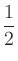 .
As explained above, two colors are considered to match if the distance between them is less than the specified matcherror value. If max_color_distance is sufficiently small, then it may easily happen that a pixel's color does not match any of the specified region colors, so the pixel would be assigned to the default region. On the other hand, if max_color_distance is larger than , then all colors will match, and no pixels will be assigned to the default region. If matcherror is not specified, then the default value for max_color_distance is 3, which means all colors match.
The following example should help clarify these matters.
Specify Oxs_ImageAtlas:atlas {
xrange { 0 400e-9 }
yrange { 0 200e-9 }
zrange { 0 20e-9 }
image mypic.gif
viewplane "xy"
colormap {
blue cobalt
red permalloy
green universe
default cobalt
}
matcherror .1
}
Pixels with colors that are equidistant to and match more than one color in the colormap will be assigned to one of the closest color regions. The user should not rely on any particular selection, that is to say, the explicit matching procedure in this case is not defined.
Examples: imageatlas.mif, grill.mif.
The Oxs_MultiAtlas specify block has the form
- Specify Oxs_MultiAtlas:name {
- atlas atlas_1_spec
- atlas atlas_2_spec
- ...
- xrange { xmin xmax }
- yrange { ymin ymax }
- zrange { zmin zmax }
- }
Each atlas_spec may be either a reference to an atlas defined earlier and outside the current Specify block, or else an inline, embedded atlas definition. The bounding box xrange, yrange and zrange specifications are each optional. If not specified the corresponding range for the atlas bounding box is taken from the minimal bounding box containing all the sub-atlases.
If the atlases are not disjoint, then the regions as defined by an Oxs_MultiAtlas can be somewhat different from those of the individual component atlases. For example, suppose regionA is a rectangular region in atlasA with corner points (5,5,0) and (10,10,10), and regionB is a rectangular region in atlasB with corner points (0,0,0) and (10,10,10). When composed in the order atlasA, atlasB inside an Oxs_MultiAtlas, regionA reported by the Oxs_MultiAtlas will be the same as regionA reported by atlasA, but regionB as reported by the Oxs_MultiAtlas will be the ``L'' shaped volume of those points in atlasB's regionB not inside regionA. If the Oxs_MultiAtlas is constructed with atlasB first and atlasA second, then regionB as reported by the Oxs_MultiAtlas would agree with that reported by atlasB, but regionA would be empty.
NOTE: The attributes key label is not supported by this class.
Examples: manyregions-multiatlas.mif, spinvalve.mif, spinvalve-af.mif, yoyo.mif.
- Specify Oxs_ScriptAtlas:name {
- xrange { xmin xmax }
- yrange { ymin ymax }
- zrange { zmin zmax }
- regions { rname_1 rname_2 ... rname_n }
- script_args { args_request }
- script Tcl_script
- }
Here xmin, xmax, ... are coordinates in meters, specifying the extents of the axes-parallel rectangular parallelepiped enclosing the total volume being identified. This volume is subdivided into n sub-regions, using the names as given in the regions list. The script is used to assign points to the various regions. Appended to the script are the arguments requested by script_args, in the manner explained in the User Defined Support Procedures section of the MIF 2 file format documentation. The value args_request should be a subset of {relpt rawpt minpt maxpt span }. If script_args is not specified, the default value relpt is used. When executed, the return value from the script should be an integer in the range 1 to n , indicating the user-defined region in which the point lies, or else 0 if the point is not in any of the n regions. Region index 0 is reserved for the implicit ``universe'' region, which is all-encompassing. The following example may help clarify the discussion:
proc Octs { cellsize x y z xmin ymin zmin xmax ymax zmax } {
set xindex [expr {int(floor(($x-$xmin)/$cellsize))}]
set yindex [expr {int(floor(($y-$ymin)/$cellsize))}]
set zindex [expr {int(floor(($z-$zmin)/$cellsize))}]
set octant [expr {1+$xindex+2*$yindex+4*$zindex}]
if {$octant<1 || $octant>8} {
return 0
}
return $octant
}
Specify Oxs_ScriptAtlas:octant {
xrange {-20e-9 20e-9}
yrange {-20e-9 20e-9}
zrange {-20e-9 20e-9}
regions { VIII V VII VI IV I III II }
script_args { rawpt minpt maxpt }
script { Octs 20e-9 }
}
This atlas divides the rectangular volume between
(- 20, - 20, - 20)
and
(20, 20, 20)
(nm) into eight regions, corresponding to the standard
octants, I through VIII. The Octs Tcl procedure returns a
value between 1 and 8, with 1 corresponding to octant VIII and 8 to
octant II. The canonical octant ordering starts with I as the
+ x, + y, + z
space, proceeds counterclockwise in the + z
half-space, and
concludes in the - z
half-space with V directly beneath I, VI beneath
II, etc. The ordering computed algorithmically in Octs
starts with 1 for the - x, - y, - z
space, 2 for the + x, - y, - z
space, 3
for the - x, + y, - z
space, etc. The conversion between the two systems
is accomplished by the ordering of the regions list.
Examples: manyregions-scriptatlas.mif, octant.mif, tclshapes.mif, diskarray.mif, ellipsoid-atlasproc.mif.
- Specify Oxs_EllipsoidAtlas:atlasname {
- xrange { xmin xmax }
- yrange { ymin ymax }
- zrange { zmin zmax }
- name regionname
- }
Here xmin, xmax, ... are coordinates in meters, specifying the bounding box for the ellipsoid. The layout of the Specify block is exactly the same as for the Oxs_BoxAtlas class, except that in this case the named region is not the whole bounding box but rather that subvolume that is the interior of the ellipsoid inscribed inside the bounding box. Points exterior to that ellipsoid are assigned to the ``universe'' region.
As in the Oxs_BoxAtlas case, the regionname entry is optional; if missing, the region name is taken from the object instance name, i.e., atlasname.
Example: ellipsoid.mif. See also ellipsoid-atlasproc.mif and ellipsoid-fieldproc.mif for equivalent examples using Tcl scripts.
- Specify Oxs_RectangularMesh:name {
- cellsize { xstep ystep zstep }
- atlas atlas_spec
- }
This creates an axes parallel rectangular mesh across the entire space covered by atlas. The mesh sample rates along each axis are specified by cellsize (in meters). The mesh is cell-based, with the center of the first cell one half step in from the minimal extremal point (xmin,ymin,ymax) for atlas_spec. The name is commonly set to ``mesh'', in which case the mesh object may be referred to by other Oxs_Ext objects by the short name :mesh.
Examples: sample.mif, stdprob3.mif, stdprob4.mif.
- Specify Oxs_PeriodicRectangularMesh:name {
- cellsize { xstep ystep zstep }
- atlas atlas_spec
- periodic periodic_axes
- }
The atlas and cellsize values are the same as for the Oxs_RectangularMesh class. The periodic_axis value should be a string consisting of one or more of the letters ``x'', ``y'', or ``z'', denoting the periodic direction(s). Oxs_Ext objects that are incompatible with Oxs_PeriodicRectangularMesh will issue an error message at runtime. In particular, the Oxs_Demag class supports periodicity in none or one direction, but not more. Also, some third-party extensions provide independent periodicity support using the older Oxs_RectangularMesh class rather than Oxs_PeriodicRectangularMesh.
Examples: pbcbrick.mif, pbcstripes.mif.
Outputs: For each magnetization configuration, three standard outputs are provided by all energy terms: the scalar output ``Energy,'' which is the total energy in joules contributed by this energy term, the scalar field output ``Energy density,'' which is a cell-by-cell map of the energy density in J/m3, and the three-component vector field output ``Field,'' which is the pointwise field in A/m. If the code was compiled with the macro NDEBUG not defined, then there will be an additional scalar output, ``Calc count,'' which counts the number of times the term has been calculated in the current simulation. This is intended for debugging purposes only; this number should agree with the ``Energy calc count'' value provided by the evolver.
- Specify Oxs_UniaxialAnisotropy:name {
- K1 K
- Ha H
- axis u
- }
Exactly one of either K1 or Ha should be specified, where K1 is the crystalline anisotropy constant (in J/m3), and Ha is the anistropy field (in A/m). In either case, axis is the anisotropy direction. K1, Ha, and axis may each be varied cellwise across the mesh: K1 and Ha are initialized with scalar field objects, while axis takes a vector field object. (A constant value will be interpreted as a uniform field object having the stated value, as usual.) The axis direction must be non-zero at each point, and will be normalized to unit magnitude before being used.
The axis direction is an easy axis if K1 (or Ha) is > 0, in which case the cellwise anisotropy energy density (in J/m3 ) is given by
respectively. (Here mi is the unit magnetization and Ms the saturation magnetization in cell i .) Otherwise, if K1 (or Ha) is < 0 , the axis direction is the normal to the easy plane and the cellwise anisotropy energy density is given by
The formulae in the two cases (easy axis vs. easy plane) differ by a constant offset, and in each case the energy is non-negative.
Examples: diskarray.mif, stdprob3.mif, grill.mif.
- Specify Oxs_CubicAnisotropy:name {
- K1 K
- Ha H
- axis1 u1
- axis2 u2
- }
Exactly one of either K1 or Ha should be specified, where K1 is the crystalline anisotropy constant (in J/m3), and Ha is the anistropy field (in A/m). In either case, axis1 and axis2 are two anisotropy directions; the third anisotropy axis u3 is computed as the vector product, u1 x u2 . For each cell, the axis directions are easy axes if K1 (or Ha) is > 0, or hard axes if K1 (or Ha) is < 0. All may be varied cellwise across the mesh. K1 or Ha is initialized with a scalar field object, and the axis directions are initialized with vector field objects. (Constant values will be interpreted as uniform fields with the indicated value, as usual.) The axis1 and axis2 directions must be mutually orthogonal and non-zero at each point (u1 and u2 are automatically scaled to unit magnitude before use).
The anisotropy energy density (in J/m3 ) for cell i is given by
or
where a1 = m . u1 , a2 = m . u2 , a3 = m . u3 , for reduced (normalized) magnetization m and orthonormal anisotropy axes u1 , u2 , and u3 at cell i . In the second form, Ms is the saturation magnetization in cell i . For each cell, if K1 (resp. Ha) is > 0 then the computed energy will be non-negative, otherwise for K1 (resp. Ha) < 0 the computed energy will be non-positive.
Examples: cgtest.mif, sample2.mif, grill.mif.
The Specify block for this term has the form
- Specify Oxs_Exchange6Ngbr:name {
- default_A value
- atlas atlas_spec
- A {
}
- region-1 region-1 A11
- region-1 region-2 A12
- ...
- region-m region-n Amn
- }
or
- Specify Oxs_Exchange6Ngbr:name {
- default_lex value
- atlas atlas_spec
- lex {
}
- region-1 region-1 lex11
- region-1 region-2 lex12
- ...
- region-m region-n lexmn
- }
where lex specifies the magnetostatic-exchange length, in meters, defined by lex = 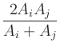 .
In the first case, the A block specifies Aij values on a region by region basis, where the regions are labels declared by atlas_spec. This allows for specification of A both inside a given region (e.g., Aii ) and along interfaces between regions (e.g., Aij ). By symmetry, if Aij is specified, then the same value is automatically assigned to Aji as well. The default_A value is applied to any otherwise unassigned Aij .
In the second case, one specifies the magnetostatic-exchange length instead of A , but the interpretation is otherwise analogous.
Although one may specify Aij (resp. lexij ) for any pair of regions i and j , it is only required and only active if the region pair are in contact. If long-range exchange interaction is required, use Oxs_TwoSurfaceExchange.
In addition to the standard energy and field outputs, Oxs_Exchange6Ngbr provides three scalar outputs involving the angle between spins at neighboring cells:
Examples: grill.mif, spinvalve.mif, tclshapes.mif.
In addition to the standard energy and field outputs, Oxs_UniformExchange provides the three scalar outputs Max Spin Ang, Stage Max Spin Ang, and Run Max Spin Ang as described for Oxs_Exchange6Ngbr.
Examples: sample.mif, cgtest.mif, stdprob3.mif.
where
 ,
,
with Aij, eff = 0 if Ai and Aj are 0.
Note that
Aij, eff
satisfies
the following properties:
| Aij, eff | = | Aji, eff | |
| Aij, eff | = | Ai 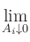 | |
| = | 0. |
Evaluating the exchange energy with this formulation of Aij, eff is equivalent to finding the minimum possible exchange energy between cells i and j under the assumption that Ai and Aj are constant in each of the two cells. Similar considerations are made in computing the exchange energy for a 2D variable thickness model [16].
The Specify block for Oxs_ExchangePtwise has the form
- Specify Oxs_ExchangePtwise:name {
- A scalarfield_spec
- }
where scalarfield_spec is an arbitrary scalar field object returning the desired exchange coefficient in J/m.
In addition to the standard energy and field outputs, Oxs_ExchangePtwise provides the three scalar outputs Max Spin Ang, Stage Max Spin Ang, and Run Max Spin Ang as described for Oxs_Exchange6Ngbr.
Example: antidots-filled.mif.
- Specify Oxs_TwoSurfaceExchange:name {
- sigma value
- sigma2 value
- surface1 {
}
- atlas atlas_spec
- region region_label
- scalarfield scalarfield_spec
- scalarvalue fieldvalue
- scalarside sign
- surface2 {
}
- atlas atlas_spec
- region region_label
- scalarfield scalarfield_spec
- scalarvalue fieldvalue
- scalarside sign
- }
Here sigma and sigma2 are the bilinear and biquadratic surface (interfacial) exchange energies, in J/m^2. Either is optional, with default value 0.
The surface1 and surface2 sub-blocks describe the two interacting surfaces. Each description consists of 5 name-values pairs, which must be listed in the order shown. In each sub-block, atlas_spec specifies an atlas, and region_label specifies a region in that atlas. These bound the extent of the desired surface. The following scalarfield, scalarvalue and scalarside entries define a discretized surface inside the bounding region. Here scalarfield_spec references a scalar field object, fieldvalue should be a floating point value, and sign should be a single character, either `- ' or `+ '. If sign is `- ', then any point for which the scalar field object takes a value less than or equal to the scalarvalue value is considered to be ``inside'' the surface. Conversely, if sign is `+ ', then any point for which the scalar field object has value greater than or equal to the scalarvalue value is considered to be ``inside'' the surface. The discretized surface determined is the set of all points on the problem mesh that are in the bounding region, are either on the surface or lie on the ``inside'' side of the surface, and have a (nearest-) neighbor that is on the ``outside'' side of the surface. A ``neighbor'' is determined by the mesh; in a typical rectangular mesh each cell has six neighbors.
In this way, 2 discrete lists of cells representing the two surfaces are obtained. Each cell from the first list (representing surface1) is then matched with the closest cell from the second list (i.e., from surface2). Note the asymmetry in this matching process: each cell from the first list is included in exactly one match, but there may be cells in the second list that are included in many match pairs, or in none. If the two surfaces are of different sizes, then in practice typically the smaller will be made the first surface, because this will usually lead to fewer multiply-matched cells, but this designation is not required.
The resulting exchange energy density at cell i on one surface from matching cell j on the other is given by
![$\displaystyle {\frac{{\sigma\left[1-\textbf{m}_i\cdot\textbf{m}_j\right]
+\sig...
...\left[1-\left(\textbf{m}_i\cdot\textbf{m}_j\right)^2\right]
}}{{\Delta_{ij}}}}$](img17.gif)
where 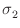 and
The following example produces an antiferromagnetic exchange coupling between the lower surface of the ``top'' layer and the upper surface of the ``bottom'' layer, across a middle ``spacer'' layer. The simple Oxs_LinearScalarField object is used here to provide level surfaces that are planes orthogonal to the z -axis. In practice this example might represent a spinvalve, where the top and bottom layers would be composed of ferromagnetic material and the middle layer could be a copper spacer.
Specify Oxs_MultiAtlas:atlas {
atlas { Oxs_BoxAtlas {
name top
xrange {0 500e-9}
yrange {0 250e-9}
zrange {6e-9 9e-9}
} }
atlas { Oxs_BoxAtlas {
name spacer
xrange {0 500e-9}
yrange {0 250e-9}
zrange {3e-9 6e-9}
} }
atlas { Oxs_BoxAtlas {
name bottom
xrange {0 500e-9}
yrange {0 250e-9}
zrange {0 3e-9}
} }
}
Specify Oxs_LinearScalarField:zheight {
vector {0 0 1}
norm 1.0
}
Specify Oxs_TwoSurfaceExchange:AF {
sigma -1e-4
surface1 {
atlas :atlas
region bottom
scalarfield :zheight
scalarvalue 3e-9
scalarside -
}
surface2 {
atlas :atlas
region top
scalarfield :zheight
scalarvalue 6e-9
scalarside +
}
}
In addition to the standard energy and field outputs, Oxs_TwoSurfaceExchange provides the three scalar outputs Max Spin Ang, Stage Max Spin Ang, and Run Max Spin Ang as described for Oxs_Exchange6Ngbr.
Example: spinvalve-af.mif.
- Specify Oxs_RandomSiteExchange:name {
- linkprob probability
- Amin A_lower_bound
- Amax A_upper_bound
- }
Each adjacent pair of cells i
, j
, is given linkprob
probability of having a non-zero exchange coefficient Aij
. Here
two cells are adjacent if they lie in each other's 6-neighborhood.
If a pair is found to have a non-zero exchange coefficient, then
Aij
is drawn uniformly from the range
[
In addition to the standard energy and field outputs, Oxs_RandomSiteExchange provides the three scalar outputs Max Spin Ang, Stage Max Spin Ang, and Run Max Spin Ang as described for Oxs_Exchange6Ngbr.
Example: randexch.mif.
- Specify Oxs_Demag:name {
- asymptotic_radius radius
- }
The analytic formulae used to compute the demag kernel are computationally expensive and inaccurate at large offsets. At offsets larger than radius (measured in cells) asymptotic approximations are used instead. If asymptotic_radius is not specified, then the default value 32 is used. For non-periodic simulations, setting radius to -1 causes the analytic formulae to be used at all offsets. The example file demagtensor.mif can be used to extract the computed demagnetization tensor coefficients for a specified cell geometry; see the description at the top of that file for usage details.
Examples: sample.mif, cgtest.mif, pbcbrick.mif, demagtensor.mif.
Example: squarecubic.mif.
The fields specified in the range entry are nominally in A/m, but these values are multiplied by multiplier, which may be used to effectively change the units. For example,
- Specify Oxs_UZeeman {
- multiplier 795.77472
- Hrange {
}
- { 0 0 0 10 0 0 2 }
- { 10 0 0 0 0 0 1 }
- }
The applied field steps between 0 mT, 5 mT, 10 mT and back to 0 mT, for four stages in total. If the first field in the second range sublist was different from the second field in the first range sublist, then a step would have been added between those field values, so five stages would have resulted. In this example, note that 795.77472=0.001/µ0.
In addition to the standard energy and field outputs, the Oxs_UZeeman class provides these four scalar outputs:
Examples: sample.mif, cgtest.mif, marble.mif.
- Specify Oxs_FixedZeeman:name {
- field vector_field_spec
- multiplier multiplier
- }
The default value for multiplier is 1.
Examples: spinvalve.mif, spinvalve-af.mif, yoyo.mif.
- Specify Oxs_ScriptUZeeman:name {
- script_args { args_request }
- script Tcl_script
- multiplier multiplier
- stage_count number_of_stages
- }
Here script indicates the Tcl script to use. The script is called once each iteration. Appended to the script are the arguments requested by script_args, in the manner explained in the User Defined Support Procedures section of the MIF 2 file format documentation. The value args_request should be a subset of {stage stage_time total_time }. If script_args is not specified, the default argument list is the complete list in the aforementioned order. The units for the time arguments are seconds.
The return value from the script should be a 6-tuple of numbers, {Hx, Hy, Hz, dHx, dHy, dHz }, representing the applied field and the time derivative of the applied field. The field as a function of time must be differentiable for the duration of each stage. Discontinuities are permitted between stages. If a time evolver is being used, then it is very important that the time derivative values are correct; otherwise the evolver will not function properly. This usual symptom of this problem is a collapse in the time evolution step size.
The field and its time derivative are multiplied by the multiplier value before use. The final field value should be in A/m; if the Tcl script returns the field in T, then a multiplier value of 1/µ0 (approx. 795774.72) should be applied to convert the Tcl result into A/m. The default value for multiplier is 1.
The stage_count parameter informs the Oxs_Driver as to how many stages the Oxs_ScriptUZeeman object wants. A value of 0 (the default) indicates that the object is prepared for any range of stages. The stage_count value given here must be compatible with the stage_count setting in the driver Specify block.
The following example produces a sinusoidally varying field of frequency 1 GHz and amplitude 800 A/m, directed along the x -axis.
proc SineField { total_time } {
set PI [expr {4*atan(1.)}]
set Amp 800.0
set Freq [expr {1e9*(2*$PI)}]
set Hx [expr {$Amp*sin($Freq*$total_time)}]
set dHx [expr {$Amp*$Freq*cos($Freq*$total_time)}]
return [list $Hx 0 0 $dHx 0 0]
}
Specify Oxs_ScriptUZeeman {
script_args total_time
script SineField
}
In addition to the standard energy and field outputs, the Oxs_ScriptUZeeman class provides these four scalar outputs:
Examples: acsample.mif, pulse.mif, rotate.mif, varalpha.mif, yoyo.mif.
The Specify block has the form
- Specify Oxs_TransformZeeman:name {
- field vector_field_spec
- type transform_type
- script Tcl_script
- script_args { args_request }
- multiplier multiplier
- stage_count number_of_stages
- }
The field specified by vector_field_spec is evaluated during problem initialization and held throughout the life of the problem. On each iteration, the specified Tcl script is called once. Appended to the script are the arguments requested by script_args, as explained in the User Defined Support Procedures section of the MIF 2 file format documentation. The value for script_args should be a subset of {stage stage_time total_time }. The default value for script_args is the complete list in the aforementioned order. The time arguments are specified in seconds.
The script return value should define a 3x3 linear transform and its time derivative. The transform must be differentiable with respect to time throughout each stage, but is allowed to be discontinuous between stages. As noted in the Oxs_ScriptUZeeman documentation, it is important that the derivative information be correct. The transform is applied pointwise to the fixed field obtained from vector_field_spec, which is additionally scaled by multiplier. The multiplier entry is optional, with default value 1.0.
The type transform_type value declares the format of the result returned from the Tcl script. Recognized formats are identity, diagonal, symmetric and general. The most flexible is general, which indicates that the return from the Tcl script is a list of 18 numbers, defining a general 3x3 matrix and its 3x3 matrix of time derivatives. The matrices are specified in row-major order, i.e., M1, 1 , M1, 2 , M1, 3 , M2, 1 , M2, 2 , .... Of course, this is a long list to construct; if the desired transform is symmetric or diagonal, then the type may be set accordingly to reduce the size of the Tcl result string. Scripts of the symmetric type return 12 numbers, the 6 upper diagonal entries in row-major order, i.e., M1, 1 , M1, 2 , M1, 3 , M2, 2 , M2, 3 , M3, 3 , for both the transformation matrix and its time derivative. Use the diagonal type for diagonal matrices, in which case the Tcl script result should be a list of 6 numbers.
The simplest transform_type is identity, which is the default. This identifies the transform as the identity matrix, which means that effectively no transform is applied, aside from the multiplier option which is still active. For the identity transform type, script and script_args should not be specified, and Oxs_TransformZeeman becomes a clone of the Oxs_FixedZeeman class.
The following example produces a 1000 A/m field that rotates in the xy -plane at a frequency of 1 GHz:
proc Rotate { freq stage stagetime totaltime } {
global PI
set w [expr {$freq*2*$PI}]
set ct [expr {cos($w*$totaltime)}]
set mct [expr {-1*$ct}] ;# "mct" is "minus cosine (w)t"
set st [expr {sin($w*$totaltime)}]
set mst [expr {-1*$st}] ;# "mst" is "minus sine (w)t"
return [list $ct $mst 0 \
$st $ct 0 \
0 0 1 \
[expr {$w*$mst}] [expr {$w*$mct}] 0 \
[expr {$w*$ct}] [expr {$w*$mst}] 0 \
0 0 0]
}
Specify Oxs_TransformZeeman {
type general
script {Rotate 1e9}
field {0 1000. 0}
}
The stage_count parameter informs the Oxs_Driver as to how many stages the Oxs_TransformZeeman object wants. A value of 0 (the default) indicates that the object is prepared for any range of stages. The stage_count value given here must be compatible with the stage_count setting in the driver Specify block.
Examples: sample2.mif, tickle.mif, rotatecenter.mif.
The Specify block takes the form
- Specify Oxs_StageZeeman:name {
- script Tcl_script
- files { list_of_files }
- stage_count number_of_stages
- multiplier multiplier
- }
The initialization string should specify either script or files, but not both. If a script is specified, then each time a new stage is started in the simulation, a Tcl command is formed by appending to Tcl_script the 0-based integer stage number. This command should return a reference to an Oxs_VectorField object, as either the instance name of an object defined via a top-level Specify block elsewhere in the MIF file, or as a two item list consisting of the name of an Oxs_VectorField class and an appropriate initialization string. In the latter case the Oxs_VectorField object will be created as a temporary object via an inlined Specify call.
The following example should help clarify the use of the script parameter.
proc SlidingField { xcutoff xrel yrel zrel } {
if {$xrel>$xcutoff} { return [list 0. 0. 0.] }
return [list 2e4 0. 0.]
}
proc SlidingFieldSpec { stage } {
set xcutoff [expr {double($stage)/10.}]
set spec Oxs_ScriptVectorField
lappend spec [subst {
atlas :atlas
script {SlidingField $xcutoff}
}]
return $spec
}
Specify Oxs_StageZeeman {
script SlidingFieldSpec
stage_count 11
}
The SlidingFieldSpec proc is used to generate the initialization string for an Oxs_ScriptVectorField vector field object, which in turn uses the SlidingField proc to specify the applied field on a position-by-position basis. The resulting field will be 2e4 A/m in the positive x-direction at all points with relative x-coordinate larger than $stage/10., and 0 otherwise. $stage is the stage index, which here is one of 0, 1, ..., 10. For example, if $stage is 5, then the left half of the sample will see a 2e4 A/m field directed to the right, and the right half of the sample will see none. The return value from SlidingFieldSpec in this case will be
Oxs_ScriptVectorField {
atlas :atlas
script {SlidingField 0.5}
}
:atlas reference is to an Oxs_Atlas object defined
elsewhere in the MIF file.
The stage_count parameter lets the Oxs_Driver know how many stages the Oxs_StageZeeman object wants. A value of 0 indicates that the object is prepared for any range of stages. Zero is the default value for stage_count when using the Tcl_script interface. The stage_count value given here must be compatible with the stage_count setting in the driver Specify block.
The example above made use of two scripts, one to specify the Oxs_VectorField object, and one used internally by the Oxs_ScriptVectorField object. But any Oxs_VectorField class may be used, as in the next example.
proc FileField { stage } {
set filelist { field-a.ohf field-b.ohf field-c.ohf }
set spec Oxs_FileVectorField
lappend spec [subst {
atlas :atlas
file [lindex $filelist $stage]
}]
return $spec
}
Specify Oxs_StageZeeman {
script FileField
stage_count 3
}
Specifying applied fields from a sequence of files is common enough to warrant a simplified interface. This is the purpose of the files parameter:
Specify Oxs_StageZeeman {
files { field-a.ohf field-b.ohf field-c.ohf }
}
The second difference is that no Oxs_Atlas is specified when using the files interface. The Oxs_FileVectorField object spatially scales the field read from the file to match a specified volume. Typically a volume is specified by explicit reference to an atlas, but with the files interface to Oxs_StageZeeman the file fields are implicitly scaled to match the whole of the meshed simulation volume. This is the most common case; to obtain a different spatial scaling use the script interface as illustrated above with a different atlas or an explicit x/y/z-range specification.
The list_of_files value is interpreted as a grouped list.
The remaining Oxs_StageZeeman parameter is multiplier. The value of this parameter is applied as a scale factor to the field magnitude on a point-by-point basis. For example, if the field returned by the Oxs_VectorField object were in Oe, instead of the required A/m, then multiplier could be set to 79.5775 to perform the conversion. The direction of the applied field can be reversed by supplying a negative multiplier value.
In addition to the standard energy and field outputs, the Oxs_StageZeeman class provides these four scalar outputs:
Examples: sliding.mif, slidingproc.mif, rotatestage.mif, rotatecenterstage.mif.
There are currently three time evolvers and one minimization evolver in the standard OOMMF distribution. The time evolvers are Oxs_EulerEvolve, Oxs_RungeKuttaEvolve, and Oxs_SpinXferEvolve. The minimization evolver is Oxs_CGEvolve.
The Specify block has the form
- Specify Oxs_EulerEvolve:name {
- alpha
- gamma_LL
![$\mbox{\renewcommand {\arraystretch}{0}$\begin{array}[b]{@{}c@{}}\bar{\gamma}\\ \rule{1pt}{0pt}\end{array}$}$](img22.gif)
- gamma_G
![$\mbox{\renewcommand {\arraystretch}{0}$\begin{array}[b]{@{}c@{}}\gamma\\ \rule{1pt}{0pt}\end{array}$}$](img27.gif)
- do_precess precess
- min_timestep minimum_stepsize
- max_timestep maximum_stepsize
- fixed_spins {
- atlas_spec
- region1 region2 ...
- }
- start_dm 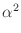m
- error_rate rate
- absolute_step_error abs_error
- relative_step_error rel_error
- step_headroom headroom
- }
All the entries have default values, but the ones most commonly adjusted are listed first.
The options alpha, gamma_LL and
gamma_G are as in the Landau-Lifshitz-Gilbert ODE
(2), (3), where the units on
 and
and
 are m/A .
s and
is dimensionless. At most one of
are m/A .
s and
is dimensionless. At most one of
 and
and
 should be specified. If
neither is specified, then the default is
should be specified. If
neither is specified, then the default is
 = 2.211 x 105
.
(Because of the absolute value convention adopted on
= 2.211 x 105
.
(Because of the absolute value convention adopted on
 and
and
 in
(2), (3), the sign given to the value of
gamma_LL or gamma_G in the Specify block is
irrelevant.) The default value for
is 0.5, which is
large compared to experimental values, but allows simulations to
converge to equilibria in a reasonable time. However, for accurate
dynamic studies it is important to assign an appropriate value to
.
in
(2), (3), the sign given to the value of
gamma_LL or gamma_G in the Specify block is
irrelevant.) The default value for
is 0.5, which is
large compared to experimental values, but allows simulations to
converge to equilibria in a reasonable time. However, for accurate
dynamic studies it is important to assign an appropriate value to
.
The do_precess value should be either 1 or 0, and determines whether or not the precession term in the Landau-Lifshitz ODE (i.e., the first term on the righthand side in (2)) is used. If precess is 0, then precession is disabled and the simulation evolves towards equilibrium along a steepest descent path. The default value is 1.
The min_timestep and max_timestep parameters provide soft limits on the size of steps taken by the evolver. The minimum value may be overridden by the driver if a smaller step is needed to meet time based stopping criteria. The maximum value will be ignored if a step of that size would produce a magnetization state numerically indistinguishable from the preceding state. The units for min_timestep and max_timestep are seconds. Default values are 0 and 10-10 respectively.
The optional fixed_spins entry allows the magnetization in selected regions of the simulation to be frozen in its initial configuration. The value portion of the entry should be a list, with the first element of the list being either an inline atlas definition (grouped as a single item), or else the name of a previously defined atlas. The remainder of the list are names of regions in that atlas for which the magnetization is to be be fixed, i.e., M(t) = M(0) for all time t for all points in the named regions. Fields and energies are computed and reported normally across these regions. Although any atlas may be used, it is frequently convenient to set up an atlas with special regions defined expressly for this purpose.
The stepsize for the first candidate iteration in the problem run is selected so that the maximum change in the normalized (i.e., unit) magnetization m is the value specified by start_dm. The units are degrees, with default value 0.01.
The four remaining entries, error_rate, absolute_step_error, relative_step_error, and step_headroom, control fine points of stepsize selection, and are intended for advance use only. Given normalized magnetization mi(t) at time t and position i , and candidate magnetization mi(t + t) at time t + t , the error at position i is estimated to be
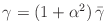
where the derivative with respect to time,
A candidate step is accepted if the maximum error across all positions
i
is smaller than absolute_step_error,
error_rate
x t
, and
relative_step_error
x |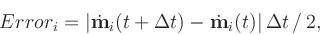|t
, where
||
is the maximum value of
| |
across all i
at time t
. If the step is rejected,
then a smaller stepsize is computed that appears to pass the above
tests, and a new candidate step is proposed using that smaller stepsize
times step_headroom. Alternatively, if the step is accepted,
then the error information is used to determine the stepsize for the
next step, modified in the same manner by step_headroom.
|
across all i
at time t
. If the step is rejected,
then a smaller stepsize is computed that appears to pass the above
tests, and a new candidate step is proposed using that smaller stepsize
times step_headroom. Alternatively, if the step is accepted,
then the error information is used to determine the stepsize for the
next step, modified in the same manner by step_headroom.
The error calculated above is in terms of unit magnetizations, so the natural units are radians or radians/second. Inside the Specify block, however, the error_rate and absolute_step_error are specified in degrees/nanosecond and degrees, respectively; they are converted appropriately inside the code before use. The relative_step_error is a dimensionless quantity, representing a proportion between 0 and 1. The error check controlled by each of these three quantities may be disabled by setting the quantity value to -1. They are all optional, with default values of -1 for error_rate, 0.2 for absolute_step_error, and 0.2 for relative_step_error.
The headroom quantity should lie in the range (0, 1) , and controls how conservative the code will be in stepsize selection. If headroom is too large, then much computation time will be lost computing candidate steps that fail the error control tests. If headroom is small, then most candidate steps will pass the error control tests, but computation time may be wasted calculating more steps than are necessary. The default value for headroom is 0.85.
In addition to the above error control tests, a candidate step will also be rejected if the total energy, after adjusting for effects due to any time varying external field, is found to increase. In this case the next candidate stepsize is set to one half the rejected stepsize.
The Oxs_EulerEvolve module provides five scalar, one scalar field, and three vector field outputs. The scalar outputs are
The scalar field output is
The vector field outputs are
Example: octant.mif.
- Specify Oxs_RungeKuttaEvolve:name {
- alpha
- gamma_LL
- gamma_G
- do_precess precess
- allow_signed_gamma signed_gamma
- min_timestep minimum_stepsize
- max_timestep maximum_stepsize
- fixed_spins {
- atlas_spec
- region1 region2 ...
- }
- start_dm m
- start_dt start_timestep
- stage_start scontinuity
- error_rate rate
- absolute_step_error abs_error
- relative_step_error rel_error
- energy_precision eprecision
- min_step_headroom min_headroom
- max_step_headroom max_headroom
- reject_goal reject_proportion
- method subtype
- }
Most of these options appear also in the Oxs_EulerEvolve class. The repeats have the same meaning as in that class, and the same default values except for relative_step_error and error_rate, which for Oxs_RungeKuttaEvolve have the default values of 0.01 and 1.0, respectively. Additionally, the alpha, gamma_LL and gamma_G options may be initialized using scalar field objects, to allow these material parameters to vary spatially.
The allow_signed_gamma parameter is for simulation testing
purposes, and is intended for advanced use only. There is some lack of
consistency in the literature with respect to the sign of
 . For this reason the Landau-Lifshitz-Gilbert
equations are presented above (2, 3)
using the absolute value of
. For this reason the Landau-Lifshitz-Gilbert
equations are presented above (2, 3)
using the absolute value of
 . This is the
interpretation used if allow_signed_gamma is 0 (the default). If
instead allow_signed_gamma is set to 1, then the
Landau-Lifshitz-Gilbert equations are interpreted without the absolute
values and with a sign change on the
. This is the
interpretation used if allow_signed_gamma is 0 (the default). If
instead allow_signed_gamma is set to 1, then the
Landau-Lifshitz-Gilbert equations are interpreted without the absolute
values and with a sign change on the
 terms, i.e., the
default value for
terms, i.e., the
default value for
 in this case is
-2.211 x 105
(units are m/A .
s). In this setting, if
in this case is
-2.211 x 105
(units are m/A .
s). In this setting, if
 is set positive then the spins will precess backwards about the
effective field, and the damping term will force the spins away
from the effective field and increase the total energy. If you are
experimenting with
is set positive then the spins will precess backwards about the
effective field, and the damping term will force the spins away
from the effective field and increase the total energy. If you are
experimenting with
 , you should either set
, you should either set
 to force spins back towards the effective field,
or disable the energy precision control (discussed
below).
to force spins back towards the effective field,
or disable the energy precision control (discussed
below).
The two controls min_step_headroom (default value 0.33) and max_step_headroom (default value 0.95) replace the single step_headroom option in Oxs_EulerEvolve. The effective step_headroom is automatically adjusted by the evolver between the min_headroom and max_headroom limits to make the observed reject proportion approach the reject_goal (default value 0.05).
The method entry selects a particular Runge-Kutta
implementation. It should be set to one of rk2,
rk4, rkf54, rkf54m, or rkf54s;
the default value is rkf54. The rk2 and
rk4 methods implement canonical second and fourth global order
Runge-Kutta methods[18], respectively. For rk2,
stepsize control is managed by comparing
 at the middle and
final points of the interval, similar to what is done for stepsize
control for the Oxs_EulerEvolve class. One step of the
rk2 method involves 2 evaluations of
at the middle and
final points of the interval, similar to what is done for stepsize
control for the Oxs_EulerEvolve class. One step of the
rk2 method involves 2 evaluations of
 .
.
In the rk4 method, two successive steps are taken at half the
nominal step size, and the difference between that end point and that
obtained with one full size step are compared. The error is estimated at
1/15th the maximum difference between these two states. One step of the
rk4 method involves 11 evaluations of
 , but the
end result is that of the 2 half-sized steps.
, but the
end result is that of the 2 half-sized steps.
The remaining methods, rkf54, rkf54m,
and rkf54s, are closely related Runge-Kutta-Fehlberg methods
derived by Dormand and Prince[7,8]. In the
nomenclature of these papers,
rkf54 implements RK5(4)7FC,
rkf54m implements RK5(4)7FM, and
rkf54s implements RK5(4)7FS.
All are 5th global order with an embedded 4th order method for stepsize
control. Each step of these methods requires 6 evaluations of
 if the step is accepted, 7 if rejected. The difference
between the methods involves tradeoffs between stability and error
minimization. The RK5(4)7FS method has the best stability, RK5(4)7FM
the smallest error, and RK5(4)7FC represents a compromise between the
two. The default method used by Oxs_RungeKuttaEvolve is
RK5(4)7FC.
if the step is accepted, 7 if rejected. The difference
between the methods involves tradeoffs between stability and error
minimization. The RK5(4)7FS method has the best stability, RK5(4)7FM
the smallest error, and RK5(4)7FC represents a compromise between the
two. The default method used by Oxs_RungeKuttaEvolve is
RK5(4)7FC.
The remaining undiscussed entry in the Oxs_RungeKuttaEvolve Specify block is energy_precision. This should be set to an estimate of the expected relative accuracy of the energy calculation. After accounting for any change in the total energy arising from time-varying applied fields, the energy remainder should decrease from one step of the LLG ODE to the next. Oxs_RungeKuttaEvolve will reject a step if the energy remainder is found to increase by more than that allowed by eprecision. The default value for eprecision is 1e-10. This control may be disabled by setting eprecision to -1.
The Oxs_RungeKuttaEvolve module provides the same scalar, scalar field, and vector field outputs as Oxs_EulerEvolve.
Examples: sample.mif, acsample.mif, varalpha.mif, yoyo.mif.
| m | = | ||
| = | Gilbert gyromagnetic ratio | ||
| = | |||
| mp | = | (unit) electron polarization direction | |
| = | 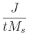 | ||
| = | secondary spin tranfer term. |
The various parameters are defined in the Specify block, which is an extension of that for the Oxs_RungeKuttaEvolve class:
- Specify Oxs_SpinXferEvolve:name {
- alpha
- gamma_LL
- gamma_G
- do_precess precess
- allow_signed_gamma signed_gamma
- min_timestep minimum_stepsize
- max_timestep maximum_stepsize
- fixed_spins {
- atlas_spec
- region1 region2 ...
- }
- start_dm m
- stage_start scontinuity
- error_rate rate
- absolute_step_error abs_error
- relative_step_error rel_error
- energy_precision eprecision
- min_step_headroom min_headroom
- max_step_headroom max_headroom
- reject_goal reject_proportion
- method subtype
- P polarization
- P_fixed p_fixed_layer
- P_free p_free_layer
- Lambda 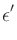
- Lambda_fixed _fixed_layer
- Lambda_free _free_layer
- eps_prime ep
- J current_density
- J_profile Jprofile_script
- J_profile_args Jprofile_script_args
- mp p_direction
- energy_slack eslack
- }
The options duplicated in the Oxs_RungeKuttaEvolve class Specify block have the same meaning and default values here, with the exception of error_rate, which for Oxs_SpinXferEvolve has the default value of -1 (i.e., disabled).
The default values for P and Lambda are 0.4 and 2,
respectively. If preferred, values for the fixed and free layers may be
instead specified separately, through P_fixed,
P_free, Lambda_fixed, and
Lambda_free. Otherwise P_fixed = P_free = P and
Lambda_fixed = Lambda_free = Lambda. Lambda must be larger than or
equal to 1; set Lambda=1 to remove the dependence of
 on
m . mp
. If you want non-zero
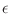
, it is set directly as
eps_prime.
on
m . mp
. If you want non-zero
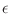
, it is set directly as
eps_prime.
Current density J and unit polarization direction mp are required. The units on J are A/m2 . Positive J produces torque that tends to align 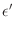 towards 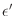 .
Parameters J, mp, P, Lambda, and eps_prime may all be varied pointwise, but are fixed with respect to time. However, J can be multiplied by a time varying ``profile,'' to model current rise times, pulses, etc. Use the J_profile and J_profile_args options to enable this feature. The Jprofile_script should be a Tcl script that returns a single scalar. Jprofile_script_args should be a subset of {stage stage_time total_time }, to specify arguments appended to Jprofile_script on each time step. Default is the entire set, in the order as listed.
The Oxs_SpinXferEvolve module provides the same five scalar
outputs and three vector outputs as Oxs_RungeKutta, plus the
scalar output ``average J,'' and the vector field outputs ``Spin
torque'' (which is
|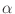| 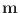m x mp x m
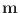m x mp x m ) and
``J*mp.'' (Development note: In the case propogate_mp is
enabled, mp is actually
) and
``J*mp.'' (Development note: In the case propogate_mp is
enabled, mp is actually

 m/
m/ x
,
where
x
is the flow direction and
x
,
where
x
is the flow direction and  is the cell dimension
in that direction.)
is the cell dimension
in that direction.)
The Oxs_SpinXferEvolve class does not include any oersted field arising from the current. Of course, arbitrary fields simulating the oersted field may be added separately as Zeeman energy terms. An example of this is contained in the spinxfer.mif sample file.
There are no temperature effects in this evolver, i.e., it is a T = 0 K code.
Note also that mp is fixed.
For basic usage, the Specify block can be as simple as
Specify Oxs_SpinXferEvolve:evolve {
alpha 0.014
J 7.5e12
mp {1 0 0}
P 0.4
Lambda 2
}
This class is still in early development; at this time the example files are located in oommf/app/oxs/local instead of oommf/app/oxs/examples.
Examples: spinxfer.mif, spinxfer-miltat.mif, spinxfer-onespin.mif.
- Specify Oxs_CGEvolve:name {
- gradient_reset_angle reset_angle
- gradient_reset_count count
- minimum_bracket_step minbrack
- maximum_bracket_step maxbrack
- line_minimum_angle_precision min_prec_angle
- line_minimum_relwidth relwidth
- energy_precision eprecision
- method cgmethod
- fixed_spins {
- atlas_spec
- region1 region2 ...
- }
- }
All entries have default values.
The evolution to an energy minimum precedes by a sequence of line minimizations. Each line represents a one dimensional affine subspace in the 3N dimensional space of possible magnetization configurations, where N is the number of spins in the simulation. Once a minimum has been found along a line, a new direction is chosen that is ideally orthogonal to all preceding directions, but related to the gradient of the energy taken with respect to the magnetization. In practice the line direction sequence cannot be extended indefinitely; the parameters gradient_reset_angle and gradient_reset_count control the gradient resetting process. The first checks the angle between the new direction and the gradient. If that angle is larger than reset_angle (expressed in degrees), then the selected direction is thrown away, and the conjugate-gradient process is re-initialized with the gradient direction as the new first direction. In a similar vein, count specifies the maximum number of line directions selected before resetting the process. Because the first line in the sequence is selected along the gradient direction, setting count to 1 effectively turns the algorithm into a steepest descent minimization method. The default values for reset_angle and count are 80 degrees and 50, respectively.
Once a minimization direction has been selected, the first stage of the line minimization is to bracket the minimum energy on that line, i.e., given a start point on the line—the location of the minimum from the previous line minimization—find another point on the line such that the energy minimum lies between those two points. As one moves along the line, the spins in the simulation rotate, with one spin rotating faster than (or at least as fast as) all the others. If the start point was not the result of a successful line minimization from the previous stage, then the first bracket attempt step is sized so that the fastest moving spin rotates through the angle specified by minimum_bracket_step. In the more usual case that the start point is a minimum from the previous line minimization stage, the initial bracket attempt step size is set to the distance between the current start point and the start point of the previous line minimization stage.
The energy and gradient of the energy are examined at the candidate bracket point to test if an energy minimum lies in the interval. If not, the interval is extended, based on the size of the first bracket attempt interval and the derivatives of the energy at the interval endpoints. This process is continued until either a minimum is bracketed or the fastest moving spin rotates through the angle specified by maximum_bracket_step.
If the bracketing process is successful, then a one dimensional minimization is carried out in the interval, using both energy and energy derivative information. Each step in this process reduces the width of the bracketing interval. This process is continued until the angle between the line direction and the computed energy gradient is within line_minimum_angle_precision degrees of orthogonal, and the width of the interval relative to the distance of the interval from the start point (i.e., the stop point from the previous line minimization process) is less than line_minimum_relwidth. The stop point, i.e., the effective minimum, is taken to be the endpoint of the final interval having smaller energy. The default value for min_prec_angle is 1 degree, and the default value for relwidth is 1. This latter setting effectively disables the line_minimum_relwidth control, which should generally be used only as a secondary control.
If the bracketing process is unsuccessful, i.e., the check for bracketed energy minimum failed at the maximum bracket interval size allowed by maximum_bracket_step, then the maximum bracket endpoint is accepted as the next point in the minimization iteration.
Once the line minimum stop point has been selected, the next iteration begins with selection of a new line direction, as described above, except in the case where the stop point was not obtained as an actual minimum, but rather by virtue of satisfying the maximum_bracket_step constraint. In that case the orthogonal line sequence is reset, in the same manner as when the gradient_reset_angle or gradient_reset_count controls are triggered, and the next line direction is taken directly from the energy gradient.
There are several factors to bear in mind when selecting values for the parameters minimum_bracket_step, maximum_bracket_step, and line_minimum_relwidth. If minimum_bracket_step is too small, then it may take a great many steps to obtain an interval large enough to bracket the minimum. If minimum_bracket_step is too large, then the bracket interval will be unnecessarily generous, and many steps may be required to locate the minimum inside the bracketing interval. However, this value only comes into play when resetting the line minimization direction sequence, so the setting is seldom critical. It is specified in degrees, with default value 0.05.
If maximum_bracket_step is too small, then the minima will be mostly not bracketed, and the minimization will degenerate into a type of steepest descent method. On the other hand, if maximum_bracket_step is too large, then the line minimizations may draw the magnetization far away from a local energy minimum (i.e., one on the full 3N dimensional magnetization space), eventually ending up in a different, more distant minimum. The value for maximum_bracket_step is specified in degrees, with default value 10.
The line_minimum_angle_precision and line_minimum_relwidth values determine the precision of the individual line minimizations, not the total minimization procedure, which is governed by the stopping criteria specified in the driver's Specify block. However, these values are important because the precision of the line minimizations affects the the line direction sequence orthogonality. If both are too coarse, then the selected line directions will quickly drift away from mutual orthogonality. Conversely, setting either too fine will produce additional line minimization steps that do nothing to improve convergence towards the energy minimum in the full 3N dimensional magnetization space.
The energy_precision parameter estimates the relative precision of the energy computations. This is used to introduce a slack factor into the energy comparisons during the bracketing and line minimization stages, that is, if the computed energy values at two points have relative error difference smaller than eprecision, they are treated as having the same energy. The default value for eprecision is 1e-10. The true precision will depend primarily on the number of spins in the simulation. It may be necessary for very large simulations to increase the eprecision value.
The method parameter can be set to either Fletcher-Reeves or Polak-Ribiere to specify the conjugate gradient direction selection algorithm. The default is Fletcher-Reeves, which has somewhat smaller memory requirements.
The last parameter, fixed_spins, performs the same function as for the Oxs_EulerEvolve class.
The Oxs_CGEvolve module provides nine scalar, one scalar field, and two vector field outputs. The scalar outputs are
The scalar field output is
The vector field outputs are
Examples: cgtest.mif, stdprob3.mif, yoyo.mif.
Tasks are small groups of steps that can be completed without adversely affecting user interface responsiveness. Stages are larger units specified by the MIF problem description; in particular, problem parameters are not expected to change in a discontinuous manner inside a stage. The run is the complete sequence of stages, from problem start to finish. The driver detects when stages and runs are finished, using criteria specified in the MIF problem description, and can enforce constraints, such as making sure stage boundaries respect time stopping criteria.
There are two drivers in Oxs, Oxs_TimeDriver for controlling time evolvers such as Oxs_RungeKuttaEvolve, and Oxs_MinDriver for controlling minimization evolvers like Oxs_CGEvolve.
- Specify Oxs_TimeDriver:name {
- evolver evolver_spec
- mesh mesh_spec
- Ms scalar_field_spec
- m0 vector_field_spec
- stopping_dm_dt torque_criteria
- stopping_time time_criteria
- stage_iteration_limit stage_iteration_count
- total_iteration_limit total_iteration_count
- stage_count number_of_stages
- stage_count_check test
- checkpoint_file restart_file_name
- checkpoint_interval checkpoint_minutes
- checkpoint_disposal cleanup_behavior
- start_iteration iteration
- start_stage stage
- start_stage_iteration stage_iteration
- start_stage_start_time stage_time
- start_stage_elapsed_time stage_elapsed_time
- start_last_timestep timestep
- normalize_aveM_output aveMflag
- report_max_spin_angle report_angle
- report_wall_time report_time
- }
The first four parameters, evolver, mesh, Ms and m0 provide references to a time evolver, a mesh, a scalar field and a vector field, respectively. Here Ms is the pointwise saturation magnetization in A/m, and m0 is the initial configuration for the magnetization unit spins, i.e., |m| = 1 at each point. These four parameters are required.
The next group of 3 parameters control stage stopping criteria. The stopping_dm_dt value, in degrees per nanosecond, specifies that a stage should be considered complete when the maximum | dm/dt| across all spins drops below this value. Similarly, the stopping_time value specifies the maximum ``Simulation time,'' i.e., the Landau-Lifshitz-Gilbert ODE (2), (3) time, allowed per stage. For example, if time_criteria is 1e-9, then no stage will evolve for more than 1 ns. If there were a total of 5 stages in the simulation, then the total simulation time would be not more than 5 ns. The third way to terminate a stage is with a stage_iteration_limit. This is a limit on the number of successful evolver steps allowed per stage. A stage is considered complete when any one of these three criteria are met. Each of the criteria may be either a single value, which is applied to every stage, or else a grouped list of values. If the simulation has more stages than a criteria list has entries, then the last criteria value is applied to all additional stages. These stopping criteria all provide a default value of 0, meaning no constraint, but usually at least one is specified since otherwise there is no automatic stage termination control. For quasi-static simulations, a stopping_dm_dt value in the range of 1.0 to 0.01 is reasonable; the numerical precision of the energy calculations usually makes in not possible to obtain | dm/dt| much below 0.001 degree per nanosecond.
The total_iteration_limit, stage_count and stage_count_check parameters involve simulation run completion conditions. The default value for the first is 0, interpreted as no limit, but one may limit the total number of steps performed in a simulation by specifying a positive integer value here. The more usual run completion condition is based on the stage count. If a positive integer value is specified for stage_count, then the run will be considered complete when the stage count reaches that value. If stage_count is not specified, or is given the value 0, then the effective number_of_stages value is computed by examining the length of the stopping criteria lists, and also any other Oxs_Ext object that has stage length expectations, such as Oxs_UZeeman. The longest of these is taken to be the stage limit value. Typically these lengths, along with stage_count if specified, will all be the same, and any differences indicate an error in the MIF file. Oxs will automatically test this condition, provided stage_count_check is set to 1, which is the default value. Stage length requests of 0 or 1 are ignored in this test, since those lengths are commonly used to represent sequences of arbitrary length. At times a short sequence is intentionally specified that is meant to be implicitly extended to match the full simulation stage length. In this case, the stage count check can be disabled by setting test to 0.
The checkpoint options are used to control the saving of solver state to disk; these saves are used by the oxsii and boxsi restart feature. The value of the checkpoint_file option is the name to use for the solver state file. The default is base_file_name.restart.
Cleanup of the checkpoint file is determined by the setting of checkpoint_disposal, which should be one of standard (the default), done_only, or never. Under the standard setting, the checkpoint file is automatically deleted upon normal program termination, either because the solver reached the end of the problem, or because the user interactively terminated the problem prematurely. If cleanup_behavior is set to done_only, then the checkpoint file is only deleted if the problem endpoint is reached. If cleanup_behavior is never, then OOMMF does not delete checkpoint file; the user is responsible for deleting this file as she desires.
The checkpoint_interval value is the time in minutes between overwrites of the checkpoint file. No checkpoint file is written until checkpoint_minutes have elapsed. Checkpoint writes occur between solver iterations, so the actual interval time may be somewhat longer than the specified time. If checkpoint_minutes is 0, then each step is saved. Setting checkpoint_minutes to -1 disables checkpointing. The default checkpoint interval is 15 minutes.
The six start_* options control the problem run start point. These are intended primarily for automatic use by the restart feature. The default value for each is 0.
The normalize_aveM_output option is used to control the scaling and units on the average magnetization components Mx , My and Mz sent as DataTable output (this includes output sent to mmDataTable, mmGraph, and mmArchive). If aveMflag is true (1), then the output values are scaled to lie in the range [- 1, 1] , where the extreme values are obtained only at saturation (i.e., all the spins are aligned). If aveMflag is false (0), then the output is in A/m. The default setting is 1.
In the older MIF 2.1 format, the driver Specify block supports three additional values: basename, scalar_output_format, and vector_field_output_format. In the MIF 2.2 format these output controls have been moved into the SetOptions block. See the SetOptions documentation for details.
Oxs_TimeDriver provides 12 scalar outputs and 2 vector field outputs. The scalar outputs are
The ``Wall time'' output is also disabled by default. It can be enabled by setting the report_wall_time option to to 1. It reports the wall clock time, in seconds, since a system-dependent zero-time. This output may be useful for performance comparisions and debugging. (Note: The timestamp for a magnetization state is recorded when output is first requested for that state; the timestamp is not directly tied to the processing of the state.)
The vector field outputs are
Examples: sample.mif, pulse.mif.
- Specify Oxs_MinDriver:name {
- evolver evolver_spec
- mesh mesh_spec
- Ms scalar_field_spec
- m0 vector_field_spec
- stopping_mxHxm torque_criteria
- stage_iteration_limit stage_iteration_count
- total_iteration_limit total_iteration_count
- stage_count number_of_stages
- stage_count_check test
- checkpoint_file restart_file_name
- checkpoint_interval checkpoint_minutes
- checkpoint_disposal cleanup_behavior
- start_iteration iteration
- start_stage stage
- start_stage_iteration stage_iteration
- start_stage_start_time stage_time
- start_stage_elapsed_time stage_elapsed_time
- start_last_timestep timestep
- normalize_aveM_output aveMflag
- report_max_spin_angle report_angle
- report_wall_time report_time
- }
These parameters are the same as those described for the Oxs_TimeDriver class, except that stopping_mxHxm replaces stopping_dm_dt, and there is no analogue to stopping_time. The value for stopping_mxHxm is in A/m, and may be a grouped list . Choice depends on the particulars of the simulation, but typical values are in the range 10 to 0.1. Limits in the numerical precision of the energy calculations usually makes it not possible to obtain |m x H x m| below about 0.01 A/m. This control can be disabled by setting it to 0.0.
As with Oxs_TimeDriver, in the older MIF 2.1 format this Specify block supports three additional values: basename to control output filenames, and output format controls scalar_output_format and vector_field_output_format. In the MIF 2.2 format these output controls have been moved into the SetOptions block. See the SetOptions documentation for details.
Oxs_MinDriver provides 10 scalar outputs and 2 vector field outputs. The scalar outputs are
The vector field outputs are
Examples: cgtest.mif, stdprob3.mif.
Scalar field objects are documented first. Vector field objects are considered farther below.
Specify Oxs_TimeDriver {
...
Ms { Oxs_UniformScalarField {
value 8e5
}}
...
}
Specify Oxs_TimeDriver {
...
Ms 8e5
...
}
Examples: sample.mif, cgtest.mif.
- Specify Oxs_AtlasScalarField {
- atlas atlas_spec
- multiplier mult
- default_value scalar_field_spec
- values {
}
- region1_label scalar_field_spec1
- region2_label scalar_field_spec2
- ...
- }
The specified atlas is used to map cell locations to regions; the value at the cell location of the scalar field from the corresponding values sub-block is assigned to that cell. The default_value entry is optional; if specified, and if a cell's region is not included in the values sub-block, then the default_value scalar field is used. If default_value is not specified, then missing regions will raise an error.
The scalar field entries may specify any of the scalar field types described in this (Field Objects) section. As usual, one may provide a single numeric value in any of the scalar_field_spec positions; this will be interpreted as requesting a uniform (spatially homogeneous) field with the indicated value.
If the optional multiplier value is provided, then each field value is scaled (multiplied) by the value mult.
The vector field analogue to this class is Oxs_AtlasVectorField, which is described below in the vector fields portion of this section.
Examples: diskarray.mif, ellipsoid.mif, grill.mif, spinvalve.mif, tclshapes.mif.
- Specify Oxs_LinearScalarField {
- norm value
- vector { vx vy vz }
- offset off
- }
If optional value norm is specified, then the given vector is first scaled to the requested size. The offset entry is optional, with default value 0. For any given point (x, y, z) , the scalar value returned by this object will be xvx + yvy + zvz + off .
Example: spinvalve-af.mif.
- Specify Oxs_RandomScalarField {
- range_min minvalue
- range_max maxvalue
- cache_grid mesh_spec
- }
The value at each position is drawn uniformly from the range declared by the two required parameters, range_min and range_max. There is also an optional parameter, cache_grid, which takes a mesh specification that describes the grid used for spatial discretization. If cache_grid is not specified, then each call to Oxs_RandomScalarField generates a different field. If you want to use the same random scalar field in two places (as a base for setting, say anisotropy coefficients and saturation magnetization), then specify cache_grid with the appropriate (usually the base problem) mesh.
Examples: randomshape.mif, stdprob1.mif.
- Specify Oxs_ScriptScalarField:name {
- script Tcl_script
- script_args { args_request }
- scalar_fields { scalar_field_spec ...}
- vector_fields { vector_field_spec ...}
- atlas atlas_spec
- xrange { xmin xmax }
- yrange { ymin ymax }
- zrange { zmin zmax }
- }
For each point of interest, the specified script is called with the arguments requested by script_args appended to the command, as explained in the User Defined Support Procedures section of the MIF 2 file format documentation. The value for script_args should be a subset of {rawpt relpt minpt maxpt span scalars vectors }.
If rawpt is requested, then when the Tcl proc is called, at
the corresponding spot in the argument list the x, y,
z values of point will be placed, in problem coordinates (in
meters). The points so passed will usually be node points in the
simulation discretization (the mesh), but
this does not have to be the case in general. The relpt,
minpt, maxpt, and span rely on a definition of a
bounding box, which is an axes parallel parallelepiped. The
bounding box must be specified by either referencing an
atlas, or by explicitly stating the range via the three
entries xrange, yrange, zrange (in
meters). The minpt and maxpt arguments list the minimum
and maximum values of the bounding box (coordinate by coordinate),
while span provides the 3-vector resulting from
(
Each of the script_args discussed so far places exactly 3 arguments onto the Tcl proc argument list. The last two, scalars and vectors, place arguments depending on the size of the scalar_fields and vector_fields lists. The scalar_fields value is a list of other scalar field objects. Each scalar field is evaluated at the point in question, and the resulting scalar value is placed on the Tcl proc argument list, in order. The vector_fields option works similarly, except each vector field generates three points for the Tcl proc argument list, since the output from vector field objects is a three vector. Although the use of these entries appears complicated, this is a quite powerful facility that allows nearly unlimited control for the modification and combination of other field objects. Both scalar_fields and vector_fields entries are optional.
If script_args is not specified, the default value relpt is used.
Note that if script_args includes relpt, minpt, maxpt, or span, then a bounding box must be specified, as discussed above. The following example uses the explicit range method. See the Oxs_ScriptVectorField documentation for an example using an atlas specification.
proc Ellipsoid { xrel yrel zrel } {
set xrad [expr {$xrel - 0.5}]
set yrad [expr {$yrel - 0.5}]
set zrad [expr {$zrel - 0.5}]
set test [expr {$xrad*$xrad+$yrad*$yrad+$zrad*$zrad}]
if {$test>0.25} {return 0}
return 8.6e5
}
Specify Oxs_ScriptScalarField {
script Ellipsoid
xrange { 0 1e-6 }
yrange { 0 250e-9 }
zrange { 0 50e-9 }
}
Below is one more example, illustrating the use of the vector_fields option.
proc DotProduct { x1 y1 z1 x2 y2 z2 } {
return [expr {$x1*$x2+$y1*$y2+$z1*$z2}]
}
Specify Oxs_FileVectorField:file1 {
atlas :atlas
file file1.omf
}
Specify Oxs_UniformVectorField:dir111 {
norm 1
vector {1 1 1}
}
Specify Oxs_ScriptScalarField:project {
script DotProduct
script_args vectors
vector_fields {:file1 :dir111}
}
Examples: antidots-filled.mif, ellipsoid-fieldproc.mif, manyregions-scriptfields.mif, manyspheres.mif, varalpha.mif.
The Specify block has the form:
- Specify Oxs_VecMagScalarField {
- field vector_field_spec
- multiplier mult
- offset off
- }
The multiplier and offset entries are applied
after the vector norm, i.e., the resulting scalar field is
The functionality of the Oxs_VecMagScalarField class may be achieved with the Oxs_ScriptScalarField class by using the vector_fields option and a Tcl script to compute the vector norm. However, this particular functionality is needed frequently enough that a specialized class is useful. For example, this class can be used in conjunction with a vector field object to set both the saturation magnetization distribution (Ms ) and the initial magnetization:
Specify Oxs_FileVectorField:file1 {
atlas :atlas
file file1.omf
}
Specify Oxs_TimeDriver {
basename test
evolver :evolve
stopping_dm_dt 0.01
mesh :mesh
m0 :file1
Ms { Oxs_VecMagScalarField {
field :file1
}}
}
Example: sample-vecrotate.mif.
- Specify Oxs_ScriptOrientScalarField:name {
- field scalar_field_spec
- script Tcl_script
- script_args { args_request }
- atlas atlas_spec
- xrange { xmin xmax }
- yrange { ymin ymax }
- zrange { zmin zmax }
- }
The field argument should refer to a scalar field object. The script is a Tcl script that should return a position vector that will be sent on the field object to ultimately produce a scalar value. The arguments to the Tcl_script are determined by script_args, which should be a subset of {relpt rawpt minpt maxpt span }. If any arguments other than rawpt are requested, then the bounding box must be specified by either the atlas option, or else through the three xrange, yrange, zrange entries. The default value for script_args is relpt.
The Oxs_ScriptOrientScalarField class can be used to change the ``orientation'' of a scalar field, as in the following simple example, which reflects the :file1mag scalar field across the yz-plane:
Specify Oxs_FileVectorField:file1 {
atlas :atlas
file file1.omf
}
Specify Oxs_VecMagScalarField:file1mag {
field :file1
}
proc Reflect { x y z xmin ymin zmin xmax ymax zmax} {
return [list [expr {($xmax+$xmin-$x)}] $y $z]
}
Specify Oxs_ScriptOrientScalarField:reflect {
field :file1mag
script Reflect
script_args {rawpt minpt maxpt}
atlas :atlas
}
Example: sample-reflect.mif.
The Specify block has the form:
- Specify Oxs_AffineOrientScalarField {
- field scalar_field_spec
- M { matrix_entries ... }
- offset { offx offy offz }
- inverse invert_flag
- inverse_slack slack
- }
If F(x ) represents the scalar field specified by the field value, then the resulting transformed scalar field is F(Mx + off) . Here M is a 3x3 matrix, which may be specified by a list of 1, 3, 6 or 9 entries. If the matrix_entries list consists of a single value, then M is taken to be that value times the identity matrix, i.e., M is a homogeneous scaling transformation. If matrix_entries consists of 3 values, then M is taken to be the diagonal matrix with those three values along the diagonal. If matrix_entries is 6 elements long, then M is assumed to be a symmetric matrix, where the 6 elements specified correspond to M11 , M12 , M13 , M22 , M23 , and M33 . Finally, if matrix_entries is 9 elements long, then the elements specify the entire matrix, in the order M11 , M12 , M13 , M21 , ..., M33 . If M is not specified, then it is taken to be the identity matrix.
The offset entry is simply a 3-vector that is added to Mx . If offset is not specified, then it is set to the zero vector.
It is frequently the case that the transformation that one wants to apply is not Mx + off , but rather the inverse, i.e., M-1(x - off) . Provided M is nonsingular, this can be accomplished by setting the inverse option to 1. In this case the matrix M.M-1 is compared to the identity matrix, to check the accuracy of the matrix inversion. If any entry in M.M-1 differs from I by more than the 8-byte float machine precision (typically 2e-16) times the value of inverse_slack, then an error is raised. The default setting for invert_flag is 0, meaning don't invert, and the default setting for slack is 128.
Here is an example using Oxs_AffineOrientScalarField to rotate a field by 90 degrees counterclockwise about the z -axis. Note that the specified atlas is square in x and y , with the origin of the atlas coordinates in the center of the atlas volume.
Specify Oxs_BoxAtlas:atlas {
xrange {-250e-9 250e-9}
yrange {-250e-9 250e-9}
zrange { -15e-9 15e-9}
}
Specify Oxs_FileVectorField:file1 {
atlas :atlas
file file1.omf
}
Specify Oxs_VecMagScalarField:file1mag {
field :file1
}
Specify Oxs_AffineOrientScalarField:reflect {
field :file1mag
M { 0 1 0
-1 0 0
0 0 1 }
}
See also the Oxs_AffineOrientVectorField class for analogous operations on vector fields.
Example: sample-rotate.mif.
- Specify Oxs_AffineTransformScalarField {
- field scalar_field_spec
- multiplier mult
- offset off
- inverse invert_flag
- }
If
F(x
)
represents the scalar field specified by the
field value, then the resulting scalar field is
mult*F(x
) + off
. Since the output
from F
is a scalar, both multiplier and offset
are scalars. If inverse is 1, then the transform is changed
to
 F(x
) - off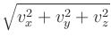/mult
,
provided mult is non-zero.
F(x
) - off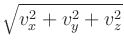/mult
,
provided mult is non-zero.
The default values for mult, off, and invert_flag are 1, 0, and 0, respectively. The field value is the only required entry.
The functionality provided by Oxs_AffineTransformScalarField can also be produced by the Oxs_ScriptScalarField class with the scalar_fields entry, but the Oxs_AffineTransformScalarField class is faster and has a simpler interface. See also the Oxs_AffineTransformVectorField class for analogous operations on vector fields.
Example: sample-rotate.mif.
- Specify Oxs_ImageScalarField:name {
- image pic
- invert invert_flag
- multiplier mult
- offset off
- viewplane view
- atlas atlas_spec
- xrange { xmin xmax }
- yrange { ymin ymax }
- zrange { zmin zmax }
- exterior ext_flag
- }
The image is interpreted as a monochromatic map, yielding a scalar field with black corresponding to zero and white to one if invert is 0 (the default), or with black corresponding to 1 and white to 0 if invert is 1. Color images are converted to grayscale by simply summing the red, green, and blue components. A multiplier option is available to change the range of values from [0, 1] to [0,mult] , after which the offset value, if any, is added.
The viewplane is treated in the same manner as the viewplane option in the Oxs_ImageAtlas class, and should likewise take one of the three two-letter codes xy (default), zx or yz. The spatial scale is adjusted to fit the volume specified by either the atlas or xrange/yrange/zrange selections. If the specified volume does not fill the entire simulation volume, then points outside the specified volume are handled as determined by the exterior setting, which should be either a floating point value, or one of the keywords boundary or error. In the first case, the floating point value is treated as a default value for points outside the image, and should have a value in the range [0, 1] . The multiplier and offset adjustments are made to this value in the same way as to points inside the image. If ext_flag is boundary, then points outside the image are filled with the value of the closest point on the boundary of the image. If ext is error (the default), then an error is raised if a value is needed for any point outside the image.
Examples: rotatecenterstage.mif, sample-reflect.mif.
The available vector field objects are:
- Specify Oxs_UniformVectorField {
- norm 1
- vector {1 1 1}
- }
This object returns the unit vector (a, a, a) , where a=1/sqrt(3), regardless of the import position.
This class is frequently embedded inline to specify spatially uniform quantities. For example, inside a driver Specify block we may have
Specify Oxs_TimeDriver {
...
m0 { Oxs_UniformVectorField {
vector {1 0 0}
}}
...
}
Specify Oxs_TimeDriver {
...
m0 {1 0 0}
...
}
Examples: sample.mif, cgtest.mif.
- Specify Oxs_AtlasVectorField {
- atlas atlas_spec
- norm magval
- multiplier mult
- default_value vector_field_spec
- values {
}
- region1_label vector_field_spec1
- region2_label vector_field_spec2
- ...
- }
Interpretation is analogous to the Oxs_AtlasScalarField specify block, except here the output values are 3 dimensional vectors rather than scalars. Thus the values associated with each region are vector fields rather than scalar fields. Any of the vector field types described in this (Field Objects) section may be used. As usual, one may provided a braced list of three numeric values to request a uniform (spatially homogeneous) vector field with the indicated value.
The optional norm parameter causes each vector value to be scaled to have magnitude magval. The optional multiplier value scales the field values. If both norm and multiplier are specified, then the field vectors are first normalized before being scaled by the multiplier value.
Examples: diskarray.mif, exchspring.mif, imageatlas.mif, spinvalve.mif.
The following example produces a vortex-like unit vector field, with an interior core region pointing parallel to the z -axis. Here the scaling region is specified using an atlas reference to an object named ``:atlas'', which is presumed to be defined earlier in the MIF file. See the Oxs_ScriptScalarField sample Specify block for an example using the explicit range option.
proc Vortex { xrel yrel zrel } {
set xrad [expr {$xrel-0.5}]
set yrad [expr {$yrel-0.5}]
set normsq [expr {$xrad*$xrad+$yrad*$yrad}]
if {$normsq <= 0.025} {return "0 0 1"}
return [list [expr {-1*$yrad}] $xrad 0]
}
Specify Oxs_ScriptVectorField {
script Vortex
norm 1
atlas :atlas
}
See also the
Oxs_MaskVectorField
documentation and the discussion of the
ReadFile MIF extension command
for other example uses of the Oxs_ScriptVectorField class.
Examples: cgtest.mif, ellipsoid.mif, manyregions-scriptfields.mif, sample-vecreflect.mif, stdprob3.mif, yoyo.mif.
- Specify Oxs_FileVectorField {
- file filename
- atlas atlas_spec
- xrange { xmin xmax }
- yrange { ymin ymax }
- zrange { zmin zmax }
- spatial_scaling { xscale yscale zscale }
- spatial_offset { xoff yoff zoff }
- exterior ext_flag
- norm magnitude
- multiplier mult
- }
Required values in the Specify block are the name of the input vector field file and the desired scaling parameters. The filename is specified via the file entry, which names a file containing a vector field in one of the formats recognized by avf2ovf. If atlas or xrange/yrange/zrange are specified, then the file will be scaled and translated as necessary to fit that scaling region, in the same manner as done, for example, by the Oxs_ScriptScalarField and Oxs_ScriptVectorField classes. Alternatively, one may specify spatial_scaling and spatial_offset directly. In this case the vector spatial positions are taken as specified in the file, multiplied component-wise by (xscale,yscale,zscale), and then translated by (xoff,yoff,zoff). If you want to use the spatial coordinates as directly specified in the file, use (1,1,1) for spatial_scaling and (0,0,0) for spatial_offset.
In all cases, once the input field has been scaled and translated, it is then sub-sampled (zeroth-order fit) as necessary to match the simulation mesh.
The exterior flag determines the behavior at ``exterior points'', i.e., locations (if any) in the simulation mesh that lie outside the extent of the scaled and translated vector field. The ext_flag should be either a three-vector, or one of the keywords boundary or error. If a three-vector is given, then that value is supplied at all exterior points. If ext_flag is set to boundary, then the value used is the point on the boundary of the input vector field that is closest to the exterior point. The default setting for ext_flag is error, which raises an error if there are any exterior points.
The magnitude of the field can be modified by the optional norm and multiplier attributes. If the norm parameter is given, then each vector in the field will be renormalized to the specified magnitude. If the multiplier parameter is given, then each vector in the field will be multiplied by the given scalar value. If the multiplier value is negative, the field direction will be reversed. If both norm and multiplier are given, then the field vectors are renormalized before being scaled by the multiplier value.
Examples: stdprob3.mif, yoyo.mif.
- Specify Oxs_RandomVectorField {
- min_norm minvalue
- max_norm maxvalue
- cache_grid mesh_spec
- }
The Specify block takes two required parameters, min_norm and max_norm. The vectors produced will have magnitude between these two specified values. If min_norm = max_norm, then the samples are uniformly distributed on the sphere of that radius. Otherwise, the samples are uniformly distributed in the hollow spherical volume with inner radius min_norm and outer radius max_norm. There is also an optional parameter, cache_grid, which takes a mesh specification that describes the grid used for cache spatial discretization. If cache_grid is not specified, then each call to Oxs_RandomVectorField generates a different field. If you want to use the same random vector field in two places (as a base for setting, say anisotropy axes and initial magnetization), then specify cache_grid with the appropriate (usually the base problem) mesh.
Examples: diskarray.mif, sample2.mif, randomshape.mif stdprob1.mif.
- Specify Oxs_RandomVectorField {
- plane_normal vector_field_spec
- min_norm minvalue
- max_norm maxvalue
- cache_grid mesh_spec
- }
The min_norm, max_norm, and cache_grid parameters have the same meaning as for the Oxs_RandomVectorField class. The additional parameter, plane_normal, specifies a vector field that at each point provides a vector that is orthogonal to the plane from which the random vector at that point is to be drawn. If the vector field is specified explicitly as three real values, then a spatially uniform vector field is produced and all the random vectors will lie in the same plane. More generally, however, the normal vectors (and associated planes) may vary from point to point. As a special case, if a normal vector at a point is the zero vector, then no planar restriction is made and the resulting random vector is drawn uniformly from a hollow ball in three space satisfying the minimum/maximum norm constraints.
Example: sample2.mif.
- Specify Oxs_ScriptOrientVectorField:name {
- field vector_field_spec
- script Tcl_script
- script_args { args_request }
- atlas atlas_spec
- xrange { xmin xmax }
- yrange { ymin ymax }
- zrange { zmin zmax }
- }
The interpretation of the specify block and the operation of the Tcl script is exactly the same as for the Oxs_ScriptOrientScalarField class, except the input field and the resulting field are vector fields instead of scalar fields.
Note that the ``orientation'' transformation is applied to the import spatial coordinates only, not the output vector. For example, if the field value represents a shaped vector field, and the script proc is a rotation transformation, then the resulting vector field shape will be rotated as compared to the original vector field, but the output vectors themselves will still point in their original directions. In such cases one may wish to compose the Oxs_ScriptOrientVectorField with a Oxs_ScriptVectorField object to rotate the output vectors as well. This situation occurs also with the Oxs_AffineOrientVectorField class. See the Oxs_AffineTransformVectorField class documentation for an example illustrating the composition of an object of that class with a Oxs_AffineOrientVectorField object.
Example: sample-vecreflect.mif.
- Specify Oxs_AffineOrientVectorField {
- field vector_field_spec
- M { matrix_entries ... }
- offset { offx offy offz }
- inverse invert_flag
- inverse_slack slack
- }
The interpretation of the specify block and the affine transformation is exactly the same as for the Oxs_AffineOrientScalarField class, except the input field and the resulting field are vector fields instead of scalar fields.
As explained in the Oxs_ScriptOrientVectorField documentation, the ``orientation'' transformation is applied to the import spatial coordinates only, not the output vector. If one wishes to rotate the output vectors, then a Oxs_AffineTransformVectorField object may be applied with the opposite rotation. See that section for an example.
Examples: yoyo.mif, sample-vecrotate.mif.
- Specify Oxs_AffineTransformVectorField {
- field vector_field_spec
- M { matrix_entries ... }
- offset { offx offy offz }
- inverse invert_flag
- inverse_slack slack
- }
Because the output from field is a 3-vector, the transform defined by M and offset requires M to be a 3x3 matrix and offset to be a 3-vector. Thus, if v (x ) represents the vector field specified by the field value, then the resulting vector field is M.v (x ) + off .
M is described by a list of from one to nine entries, in exactly
the same manner as for the
Oxs_AffineOrientVectorField
and
Oxs_AffineOrientScalarField
classes. The
interpretation of offset, inverse, and
inverse_slack is also the same. In particular, if
invert_flag is 1, then the resulting vector field is
M-1. v
(x
) - off
v
(x
) - off .
.
The following example illustrates combining a Oxs_AffineTransformVectorField with a Oxs_AffineOrientVectorField to completely rotate a vector field.
Specify Oxs_BoxAtlas:atlas {
xrange {-80e-9 80e-9}
yrange {-80e-9 80e-9}
zrange {0 40e-9}
}
proc Trap { x y z } {
if {$y<=$x && $y<=0.5} {return [list 0 1 0]}
return [list 0 0 0]
}
Specify Oxs_ScriptVectorField:trap {
script Trap
atlas :atlas
}
Specify Oxs_AffineOrientVectorField:orient {
field :trap
M { 0 -1 0
1 0 0
0 0 1 }
offset { -20e-9 0 0 }
inverse 1
}
Specify Oxs_AffineTransformVectorField:rot {
field :orient
M { 0 -1 0
1 0 0
0 0 1 }
}
proc Threshold { vx vy vz } {
set magsq [expr {$vx*$vx+$vy*$vy+$vz*$vz}]
if {$magsq>0} {return 8e5}
return 0.0
}
Specify Oxs_ScriptScalarField:Ms {
vector_fields :rot
script Threshold
script_args vectors
}
Specify Oxs_TimeDriver {
m0 :rot
Ms :Ms
stopping_dm_dt 0.01
evolver :evolve
mesh :mesh
}


Example: sample-vecrotate.mif.
- Specify Oxs_MaskVectorField {
- mask scalar_field_spec
- field vector_field_spec
- }
This functionality can be achieved, if in a somewhat more complicated fashion, with the Oxs_ScriptVectorField class. For example, given a scalar field :mask and a vector field :vfield, this example using the Oxs_MaskVectorField class
Specify Oxs_MaskVectorField {
mask :mask
field :vfield
}
proc MaskField { m vx vy vz } {
return [list [expr {$m*$vx}] [expr {$m*$vy}] [expr {$m*$vz}]]
}
Specify Oxs_ScriptVectorField {
script MaskField
script_args {scalars vectors}
scalar_fields { :mask }
vector_fields { :vfield }
}
Example: rotatecenterstage.mif.
- Specify Oxs_ImageVectorField:name {
- image pic
- multiplier mult
- vx_multiplier xmult
- vy_multiplier ymult
- vz_multiplier zmult
- vx_offset xoff
- vy_offset yoff
- vz_offset zoff
- norm norm_magnitude
- viewplane view
- atlas atlas_spec
- xrange { xmin xmax }
- yrange { ymin ymax }
- zrange { zmin zmax }
- exterior ext_flag
- }
The image is interpreted as a three-color map, yielding a vector field where each (x,y,z) component is determined by the red, green, and blue color components, respectively....
The viewplane, atlas, xrange/yrange/zrange, and exterior are treated the same as for the Oxs_ImageScalarField class
Examples: NONE.
Specify Oxs_LabelValue:probdata {
alpha 0.5
start_dm 0.01
}
Specify Oxs_EulerEvolve {
attributes :probdata
}
The Specify block string for Oxs_LabelValue objects is an
arbitrary Tcl list with an even number of elements. The first
element in each pair is interpreted as a label, the second as the
value. The attribute option causes this list to be dropped
verbatim into the surrounding object. This technique is most useful
if the label + value pairs in the Oxs_LabelValue object are
used in multiple Specify blocks, either inside the same MIF file, or across several MIF files into which the
Oxs_LabelValue block is imported using the ReadFile MIF extension command.
Examples: The MIF files sample-rotate.mif and sample-reflect.mif use the Oxs_LabelValue object stored in the sample-attributes.tcl file.
Refer to the MIF 2 documentation for details on the base format specification.